WysiQ — Modul Signals
Benutzerhandbuch und Schulungskurs
Dynamik, Rauigkeit und Zyklen einer Zeitreihe messen — 22 Metriken mit grafischen Beispielen erklärt
Referenzversion: Build FIX35 · Oktober 2026 · Sprache: Deutsch
Für wen ist dieser Kurs? Für WysiQ-Anwender, die bereits eine Tabelle laden, Reihen plotten und die Area-Palette nutzen können. Kenntnisse in Signalverarbeitung sind nicht erforderlich: Jede Metrik wird zuerst mit einem visuellen Beispiel, dann mit ihrer Formel und schließlich mit ihrer Interpretation eingeführt. Richtwert: 3 Stunden (Lektüre + Übungen). Empfohlener Weg: Kapitel 1 bis 4 (Stufe Basic), dann 5 (Advanced), dann 6 (Expert) sowie die Praxiskapitel 7 bis 10. |
0. So arbeiten Sie mit diesem Kurs
Das Modul Signals ergänzt WysiQ um eine Palette, die für jede aktive Reihe eine Reihe von Dynamikmetriken berechnet: wie stark sich die Kurve bewegt, wie schnell, wie regelmäßig und in welchen Zyklen. Dieses Dokument ist zugleich Bedienungsanleitung (Kapitel 2), Referenz (ein Steckbrief pro Metrik, Kapitel 4 bis 6) und Schulungsunterlage (geführte Übungen, Praxisfall und Quiz mit Lösungen).
Aufbau
| Kapitel | Inhalt | Stufe |
| 1 | Warum Signals: was klassische Statistiken nicht sehen | Alle |
| 2 | Die Signal-Palette Schritt für Schritt | Alle |
| 3 | Notation und gemeinsame Berechnungsregeln aller Metriken | Alle |
| 4 | Basic-Metriken: nb, trans, TVAR, NTVAR, SIGN_CHG, PEAKS, VALLEYS, OSC_PERIOD | Basic |
| 5 | Advanced-Metriken: TVAR2, NTVAR2, SPIKE_RATIO, RAMP_CONC, ZERO_X, Steigungen, AUTOCORR_LAG1, SMOOTHNESS | Advanced |
| 6 | Expert-Metriken: HF_ENERGY und die vier FFT-Kennzahlen | Expert |
| 7 | Signal → Reihe: eine Metrik in eine Kurve verwandeln | Advanced |
| 8 | Metriken gemeinsam lesen: Diagnoseraster | Advanced |
| 9 | Praxisfall: Kernkraft mit und ohne Solar | Alle |
| 10 | Übungen und Lösungen | Alle |
| 11 | Spickzettel der 22 Metriken | Alle |
Konventionen
• Metriknamen werden wie in WysiQ geschrieben, z. B. TVAR oder FFT_PERIOD1.
• Oberflächenbeschriftungen sind wie in der Anwendung englisch: ReCalc, Use Area, Signals...
• Die Stufen Basic, Advanced und Expert entsprechen der Skala in Settings > Signal (Spalte Level).
• Alle Zahlen in den Abbildungen wurden mit der echten Rechenengine von WysiQ (xiquery/signal/metrics.py) berechnet: Wenn Sie die Beispiele nachbauen, erhalten Sie dieselben Werte.
Kästen Blau: Tipp. Orange: Falle. Grün: Merksatz. Violett: Übung. |
1. Warum Signals?
Die Paletten Area und Stats beantworten die Frage „wie viel?“: Mittelwert (AVG), Summe (SUM), Differenz zwischen Anfang und Ende (DELTA), Spannweite (RANGE). Sie sagen nichts darüber, wie sich die Reihe zwischen zwei Punkten entwickelt. Zwei Kurven können exakt denselben Mittelwert und dieselbe Spannweite haben und dennoch völlig unterschiedliche Geschichten erzählen.
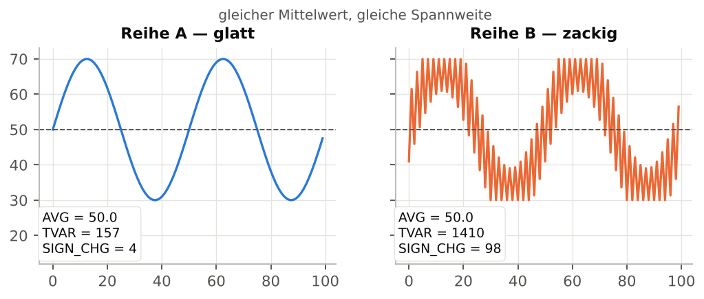
Abbildung 1 — Gleicher Mittelwert (50) und gleiche Spannweite (30 → 70), aber eine völlig andere Dynamik.
In Abbildung 1 beträgt AVG für beide Reihen 50. Reihe B legt jedoch insgesamt 1410 Einheiten zurück, Reihe A nur 157 (TVAR), und sie wechselt 98-mal die Richtung statt 4-mal (SIGN_CHG). Genau das misst die Signal-Palette: die interne Bewegung einer Reihe über einen X-Bereich.
Fragen, die Signals beantwortet
| Fachliche Frage | Relevante Metriken |
| Ist die Reihe in diesem Zeitraum unruhiger als in jenem? | NTVAR, SMOOTHNESS, HF_ENERGY |
| Sind die Bewegungen gleichmäßig oder bestehen sie aus wenigen großen Sprüngen? | SPIKE_RATIO, RAMP_CONC, ABS_SLOPE_MAX |
| Wie oft steigt die Kurve und fällt wieder? | PEAKS, VALLEYS, SIGN_CHG |
| Gibt es einen Zyklus, und wie lang ist er? | FFT_PERIOD1, OSC_PERIOD, FFT_POWER_LF |
| Ist die Reihe von einem Punkt zum nächsten vorhersagbar? | AUTOCORR_LAG1 |
| Wechselt ein Saldo häufig das Vorzeichen? | ZERO_X |
Typisches WysiQ-Beispiel Die Variabilität der Kernkraftproduktion in Zeiträumen mit viel und ohne Solarproduktion vergleichen. Der Mittelwert sinkt leicht, vor allem aber wird die Kurve „gesteuert“: tägliche Modulationen, Rampen, Mittagssenken. Dieser Fall wird in Kapitel 9 vollständig durchgearbeitet. |
2. Erste Schritte mit der Signal-Palette
2.1 Palette öffnen
1. Öffnen Sie eine Query und plotten Sie mindestens eine Reihe im Grafikfenster.
2. Klicken Sie in der Schaltflächenleiste des Graphen auf Signals (neben Table, Area und Scenario). In der Paletten-Fernbedienung öffnet und schließt die Kurzwahl Si dieselbe Palette.
3. Das Fenster „Signal — <Query-Name>“ öffnet sich. Position, Größe und Sichtbarkeit werden mit der Query gespeichert und beim erneuten Öffnen wiederhergestellt.
2.2 Welche Reihen werden analysiert?
Die Palette analysiert alle Reihen, die in der Spalte A der Reihen-Palette aktiviert sind: Tabellenreihen, Metrics, virtuelle Reihen (Alias, Combo, festgeschriebenes Szenario) sowie A-Reihen, die zusätzlich in G geplottet werden. Ein eventueller Koeffizient (coeff) wird angewendet: Eine mit 0,001 multiplizierte Reihe erscheint als Reihe*0.001.
Keine Reihe? Zeigt die Tabellenüberschrift „Metric — no A-series active (check A column)“, ist keine Reihe in A aktiviert. Aktivieren Sie die Spalte A der zu analysierenden Reihen und klicken Sie auf ReCalc. |
2.3 X-Bereich wählen
Die Metriken werden nur über die Punkte berechnet, deren X zwischen Xmin und Xmax liegt. Zwei Modi:
| Modus | Verhalten |
| Use Area aktiviert (Standard) | Existiert ein gültiges Area-Rechteck im Graphen, werden Xmin/Xmax daraus übernommen. Ohne gültiges Rechteck zeigt Signal die sichtbaren X-Grenzen und analysiert alle Punkte. |
| Use Area deaktiviert (manuell) | Xmin und Xmax sind editierbar. Grenzen eingeben und mit Enter bestätigen (oder das Feld verlassen): Die Berechnung wird neu gestartet. |
• Datumsangaben in Xmin/Xmax folgen dem Format unter Params > Core > Date format (tables).
• X kann die Zeit, eine Rohreihe, eine Metric oder eine berechnete Reihe sein: Die Palette folgt der X-Achse des Graphen.
• Die Felder rechnen nicht bei jedem Tastendruck neu: Nur Enter, das Verlassen des Feldes oder ReCalc lösen die Berechnung aus.
2.4 Der Schwellwert eps
Das Feld eps legt eine Amplitude fest, unterhalb derer eine Änderung als Rauschen gilt. Es wirkt auf die Zählmetriken: SIGN_CHG, PEAKS, VALLEYS, OSC_PERIOD (über die Extrema) und ZERO_X. TVAR, NTVAR, Steigungen und FFT bleiben unverändert. Standardwert: 0 (keine Filterung). Die Anwendung wird im Steckbrief SIGN_CHG (§ 4.5) erklärt.
2.5 Aufbau der Palette

Abbildung 2 — Schema der Signal-Palette (Normalansicht: eine Zeile pro Metrik, eine Spalte pro Reihe).
| Nr. | Element | Funktion |
| 1 | Use Area | Synchronisiert Xmin/Xmax mit dem Area-Rechteck (§ 2.3). |
| 2 | Xmin / Xmax | Grenzen des analysierten Bereichs; editierbar, wenn Use Area deaktiviert ist. |
| 3 | eps | Rauschschwelle der Zählmetriken (§ 2.4). |
| 4 | ReCalc | Berechnet alle Metriken neu und liest die X-Grenzen erneut ein. |
| 5 | Transpose | Wechselt zwischen Normalansicht (Metriken in Zeilen) und transponierter Ansicht (Reihen in Zeilen, Metriken in Spalten). |
| 6 | Signals... | Öffnet direkt den Reiter Settings > Signal (Spaltenauswahl, HF-Fenster). |
| 7 | → AI | Schickt die berechnete Tabelle in den AI Feed (§ 2.8). |
| 8 | > Serie | Aktiviert den Sendemodus, um vektorielle Reihen zu erzeugen (Kapitel 7). |
| 9 | Post-it ▾ | Post-it: eingefrorene gelbe Kopie der Tabelle. Hide/Show: blendet Post-its aus oder ein. |
| 10 | ? | Öffnet die integrierte Hilfe der Palette. |
| 11 | Spalte S | ● = die Metrik hat eine vektorielle Version; grünes ✓ = in dieser Sitzung bereits gesendet. |
| 12 | Reihenüberschriften | Ein Klick sortiert die Tabelle; im Modus > Serie wählt ein Klick die Reihe aus. |
| 13 | Signals Description | Name der Metrik mit Kurzbeschreibung. |
2.6 Angezeigte Metriken wählen: Settings > Signal
Die Schaltfläche Signals... öffnet den Reiter Signal im Settings-Fenster. Dort steht der Katalog der 22 Metriken mit fünf Spalten: Show (✓ wenn angezeigt), Signal (Name), Level (Basic, Advanced, Expert), Formula und Meaning.
• Klicken Sie eine Zeile an, um die entsprechende Spalte in der Palette ein- oder auszublenden.
• Klicken Sie die Überschrift Signal (n/22) all on/off, um alle ein- oder auszublenden.
• Das Feld HF moving average window legt das Fenster des gleitenden Mittelwerts für HF_ENERGY und für alle gleitenden Umwandlungen von Signal → Reihe fest. Standard: 7. Gerade Werte werden auf die nächstkleinere ungerade Zahl abgerundet (8 → 7), damit das Fenster zentriert bleibt. Zulässiger Bereich: 3 bis 999.
Schulungstipp Blenden Sie zu Beginn nur die Basic-Metriken ein. Fügen Sie Advanced und Expert im Laufe der Kapitel hinzu: Die Tabelle bleibt lesbar und jede neue Spalte hat eine Bedeutung. |
2.7 Lesen, sortieren, transponieren, kopieren
• Sortieren: Klicken Sie auf die Überschrift einer Reihe (Normalansicht) oder einer Metrik (transponierte Ansicht).
• Transponieren: Die transponierte Ansicht ist praktischer bei vielen Reihen und wenigen Metriken.
• Kopieren: Zeilen markieren und STRG+C; die Spaltenüberschriften werden mitkopiert (direkt in eine Tabellenkalkulation einfügbar).
• Einfrieren: Post-it erzeugt eine gelbe Kopie der Tabelle. X-Bereich ändern, neu berechnen und alte und neue Tabelle nebeneinander vergleichen.
• Die Anzahl der Dezimalstellen folgt der Dezimaleinstellung von WysiQ; die Spaltenbreiten werden gespeichert.
2.8 Ergebnisse an die KI senden: → AI
Nach einer Berechnung legt → AI die Signaltabelle im AI Feed der Query ab. Im AI Center bittet die vordefinierte Frage Signale interpretieren den Assistenten, die stärksten Signale zu benennen, Spitzen, Brüche, Zyklen oder Anomalien zu erklären, Datenartefakte von echten Ereignissen zu unterscheiden und nächste Prüfungen vorzuschlagen. Wurde noch nichts berechnet, fordert eine Meldung dazu auf, zuerst ReCalc auszuführen.
2.9 Geführte Übung Nr. 1 — erste Messung
Ziel: zwei Wochen derselben Reihe vergleichen • Plotten Sie eine stündliche Reihe (z. B. einen Verbrauch) und aktivieren Sie sie in A. • Öffnen Sie die Signals-Palette. Lassen Sie Use Area aktiviert. • Zeichnen Sie in der Area-Palette ein Rechteck über eine erste Woche. Klicken Sie ReCalc. • Wählen Sie Post-it, um das Ergebnis einzufrieren. • Verschieben Sie das Rechteck auf eine zweite Woche, dann ReCalc. • Vergleichen Sie NTVAR und PEAKS zwischen Post-it und aktueller Tabelle. Welche Woche ist unruhiger? |
3. Notation und Berechnungsregeln
Alle Metriken teilen dieselbe Datenvorbereitung. Wer sie kennt, vermeidet die meisten Fehlinterpretationen.
3.1 Gültige Punkte und Übergänge
Nur Punkte, an denen X und Y endliche Zahlen sind, werden behalten; fehlende Werte (NaN) werden vor jeder Berechnung entfernt. Die verbleibenden Punkte heißen y0, y1, …, yn, die aufeinanderfolgenden Differenzen dy[i] = y[i+1] − y[i].
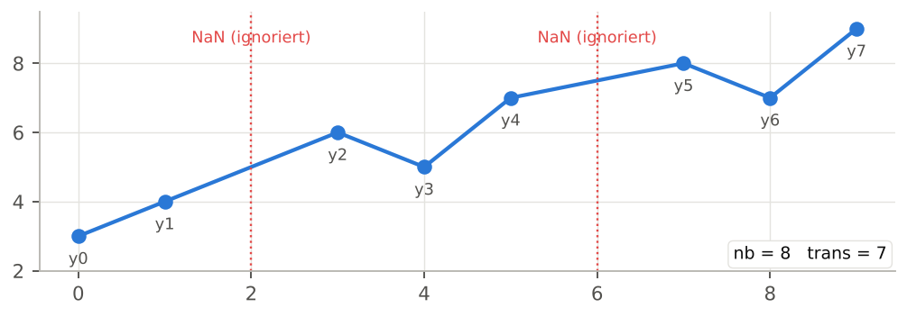
Abbildung 3 — Zwei fehlende Werte werden ignoriert: nb = 8 gültige Punkte, trans = 7 Übergänge.
Lücken werden „zusammengenäht“ Wird ein NaN entfernt, werden der vorherige und der nächste Punkt benachbart: Der Übergang überspringt die Lücke. Bei Daten mit langen Ausfällen entsteht so ein künstlicher Sprung, der TVAR2, SPIKE_RATIO oder ABS_SLOPE_MAX aufbläht. Wählen Sie einen X-Bereich ohne große Lücken oder füllen Sie Lücken vorab. |
3.2 Die Einheit von X: Vorsicht bei Datumswerten
Ist die X-Achse ein Datum, rechnet WysiQ sie in Tage um (Matplotlib-Konvention). Alle X-abhängigen Metriken werden dann in Tagen ausgedrückt:
| Metrik | Einheit bei Datums-X | Beispiel |
| ABS_SLOPE_AVG, ABS_SLOPE_MAX | Y-Einheit pro Tag | MW/Tag |
| OSC_PERIOD, FFT_PERIOD1 | Tage | 1,0 = 24 h; 0,25 = 6 h; 7,0 = eine Woche |
| FFT_FREQ1 | Zyklen pro Tag | 1,0 = ein Zyklus pro Tag |
In den Beispielen dieses Kurses ist X oft in Stunden oder als Index angegeben, um einfache Zahlen zu erhalten: Teilen Sie durch 24, um den Wert zu erhalten, den WysiQ auf einer stündlichen Datumsachse anzeigt.
3.3 Metriken mit und ohne Einheit
Einige Metriken erben die Einheit von Y (TVAR, NTVAR, Steigungen …): Sie lassen sich nur zwischen Reihen gleicher Einheit und Größenordnung vergleichen. Andere sind dimensionslos (SPIKE_RATIO, RAMP_CONC, AUTOCORR_LAG1, FFT_POWER_HF/LF) oder Zählwerte (PEAKS, SIGN_CHG …): Sie sind zwischen beliebigen Reihen vergleichbar. Der Spickzettel in Kapitel 11 gibt diese Eigenschaft für jede Metrik an.
3.4 nan-Werte
Eine Zelle „nan“ bedeutet, dass die Metrik für den gewählten Bereich nicht definiert ist: weniger als 2 Punkte (kein Übergang), weniger als 3 Punkte (Autokorrelation), weniger als 5 Punkte (HF_ENERGY), weniger als 8 Punkte (FFT), konstante Reihe (Autokorrelation) oder weniger als zwei Extrema (OSC_PERIOD). Das ist kein Fehler: Vergrößern Sie den X-Bereich.
4. Metriken der Stufe Basic
Die acht Basic-Metriken beruhen jeweils auf einer einzigen mechanischen Idee und sind auf einen Blick lesbar. Für die meisten alltäglichen Vergleiche reichen sie aus.
4.1 nb — Anzahl gültiger Punkte
| Stufe | Formel | Einheit | Signal → Reihe |
| Basic | nb = len(y) | Punkte | nein |
Anzahl der Punkte, die nach Entfernen fehlender Werte und Filterung auf [Xmin, Xmax] tatsächlich verwendet werden. Dies ist die erste Spalte, die Sie prüfen sollten: Sie bestätigt den richtigen Bereich und zeigt eine unvollständige Reihe (nb kleiner als bei den anderen Reihen im selben Bereich).
• Eine vollständige Stundenwoche ergibt nb = 168; ein Tag im Viertelstundenraster nb = 96.
• Unterscheidet sich nb zwischen zwei Reihen im selben Bereich, hat eine davon Lücken: Summenmetriken (TVAR, TVAR2, HF_ENERGY) sind dann nicht direkt vergleichbar.
4.2 trans — Anzahl der Übergänge
| Stufe | Formel | Einheit | Signal → Reihe |
| Basic | trans = len(dy) = nb − 1 | Übergänge | nein |
Anzahl der Schritte zwischen aufeinanderfolgenden Punkten. Dient als Nenner der normierten Versionen NTVAR und NTVAR2. Ist er 0 (nur ein Punkt), sind alle Bewegungsmetriken nan.
4.3 TVAR — Totalvariation
| Stufe | Formel | Einheit | Signal → Reihe |
| Basic | TVAR = Σ |dy[i]| | Y-Einheit | ja: Local variance |
TVAR summiert den Absolutbetrag jeder Bewegung: Anstiege und Rückgänge heben sich nicht auf. Es ist der „vertikal zurückgelegte Weg“ der Kurve, wie der Kilometerzähler eines Autos, das hin- und herfährt.
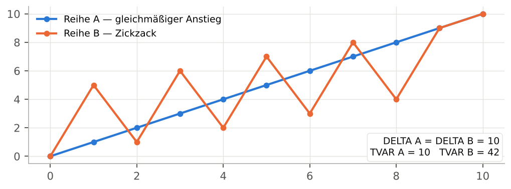
Abbildung 4 — Gleiches DELTA (0 → 10), aber TVAR = 10 für den gleichmäßigen Anstieg und 42 für den Zickzack.
TVAR lesen
• TVAR = |DELTA|: Die Reihe hat sich monoton entwickelt (immer in dieselbe Richtung).
• TVAR ≫ |DELTA|: Die Reihe ist viel hin und her gelaufen. Das Verhältnis TVAR / |DELTA| misst diesen „Umweg“.
• TVAR hängt von der Punktanzahl ab: Für Bereiche unterschiedlicher Länge verwenden Sie NTVAR.
Anwendung in WysiQ Bei einer regelbaren Erzeugung entspricht TVAR über einen Tag ungefähr dem kumulierten Modulationsvolumen (in MW) des Kraftwerksparks. |
4.4 NTVAR — normierte TVAR
| Stufe | Formel | Einheit | Signal → Reihe |
| Basic | NTVAR = TVAR / trans | Y-Einheit pro Schritt | ja: Local variance |
Mittlere absolute Bewegung pro Übergang. NTVAR erlaubt den Vergleich von Bereichen unterschiedlicher Länge, sofern die Abtastschrittweite gleich ist.
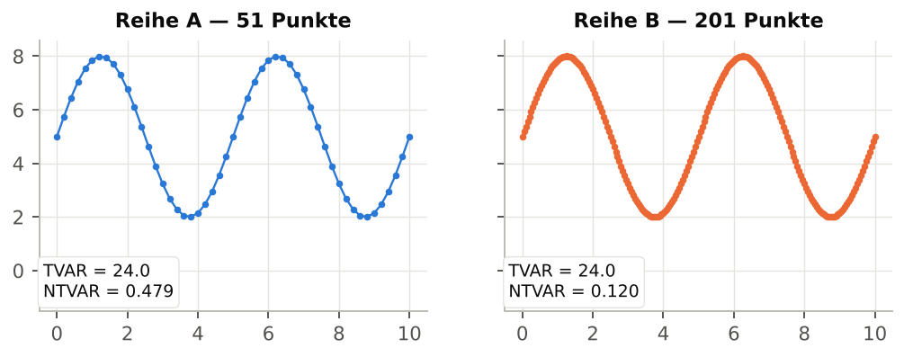
Abbildung 5 — Dieselbe Kurve mit 51 bzw. 201 Punkten abgetastet: TVAR bleibt ≈ 24, NTVAR sinkt aber von 0,479 auf 0,120.
Falle: die Abtastschrittweite Bei einer glatten Kurve gilt: Je mehr Punkte, desto kleiner jeder Schritt – NTVAR sinkt mechanisch. Vergleichen Sie NTVAR nur zwischen Reihen mit gleicher Schrittweite (stündlich mit stündlich). Für eine schrittweitenunabhängige Kennzahl verwenden Sie ABS_SLOPE_AVG (§ 5.6), das durch dx teilt. |
4.5 SIGN_CHG — Richtungswechsel
| Stufe | Formel | Einheit | Signal → Reihe |
| Basic | SIGN_CHG = count(sign(dy[i]) ≠ sign(dy[i−1])) nach eps-Filterung |
Anzahl | nein |
Zählt, wie oft die Steigung ihr Vorzeichen wechselt, also wie oft die Kurve von „steigt“ zu „fällt“ wechselt oder umgekehrt. Nullschritte werden ignoriert, ebenso Schritte mit einer Amplitude unter eps.
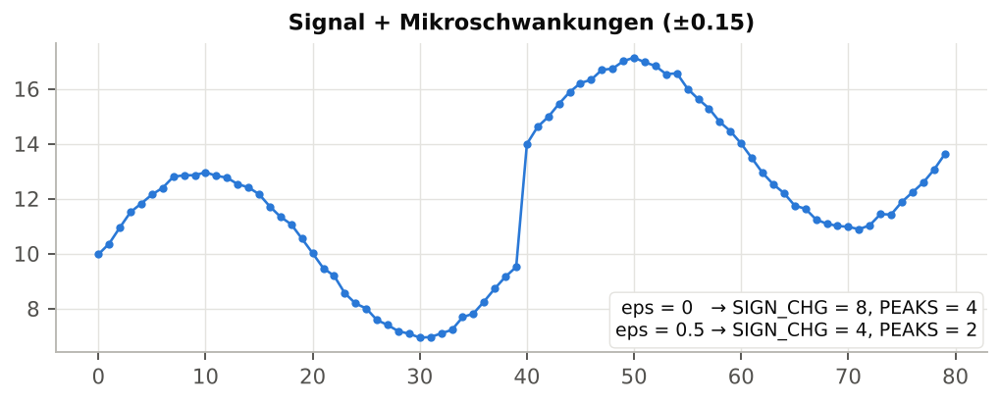
Abbildung 6 — Ein Rauschen von ±0,15 erzeugt zusätzliche Richtungswechsel; eps = 0,5 entfernt sie (SIGN_CHG: 8 → 4).
eps wählen
1. Zoomen Sie auf einen „ruhigen“ Abschnitt der Reihe und schätzen Sie die typische Rauschamplitude von Punkt zu Punkt.
2. Tragen Sie in eps das 2- bis 3-Fache dieser Amplitude ein und drücken Sie Enter.
3. Prüfen Sie, dass SIGN_CHG, PEAKS und VALLEYS jetzt den mit bloßem Auge sichtbaren Schwingungen entsprechen.
Merksatz eps wird in der Einheit von Y angegeben: Ein für MW passender Wert passt nicht für GW. Ohne eps messen die Zählwerte vor allem das Rauschen. |
4.6 PEAKS und VALLEYS — lokale Spitzen und Täler
| Stufe | Formel | Einheit | Signal → Reihe |
| Basic | PEAKS: Steigung + dann − VALLEYS: Steigung − dann + |
Anzahl | nein |
PEAKS zählt die lokalen Maxima (die Kurve steigt und fällt wieder), VALLEYS die lokalen Minima. Plateaus (Steigung null oder unter eps) werden „durchquert“: Ein Plateau zwischen Anstieg und Abstieg zählt als eine einzige Spitze.
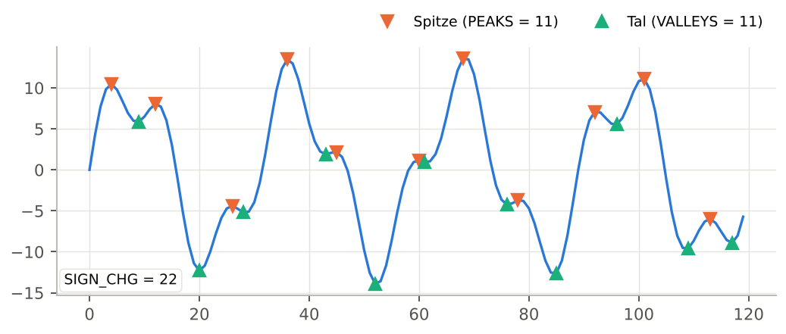
Abbildung 7 — Ein Signal mit zwei Komponenten: PEAKS = 11, VALLEYS = 11, SIGN_CHG = 22.
• Ohne eps gilt fast immer SIGN_CHG ≈ PEAKS + VALLEYS.
• |PEAKS − VALLEYS| ≤ 1: Spitzen und Täler wechseln sich zwangsläufig ab.
• Bei einem Verbrauchstag steht PEAKS = 2 für die klassische Doppelspitze morgens/abends.
4.7 OSC_PERIOD — mittlerer Abstand zwischen Extrema
| Stufe | Formel | Einheit | Signal → Reihe |
| Basic | OSC_PERIOD = Mittelwert der X-Abstände zwischen aufeinanderfolgenden Extrema |
X-Einheit | nein |
OSC_PERIOD sucht alle Spitzen und Täler (mit derselben eps-Filterung) und berechnet den mittleren X-Abstand zwischen zwei aufeinanderfolgenden Extrema.
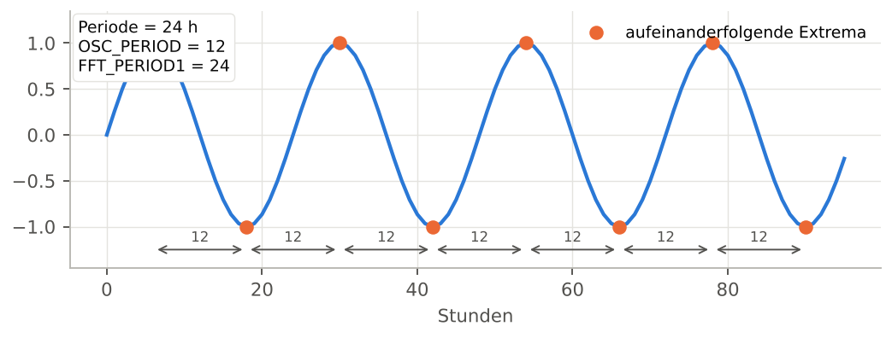
Abbildung 8 — Sinus mit 24 h Periode: OSC_PERIOD = 12, FFT_PERIOD1 = 24.
Halbe Periode Gemessen wird der Abstand von einer Spitze zum nächsten Tal: Bei einer regelmäßigen Schwingung beträgt OSC_PERIOD daher die Hälfte der Zyklusperiode. Multiplizieren Sie mit 2, um mit FFT_PERIOD1 zu vergleichen. Gilt 2 × OSC_PERIOD ≈ FFT_PERIOD1, ist der erkannte Zyklus sauber; ist OSC_PERIOD viel kleiner, kommen Mikroschwankungen (Rauschen) hinzu: eps erhöhen. |
OSC_PERIOD ist nan, wenn im Bereich weniger als zwei Extrema liegen (monotone Reihe).
5. Metriken der Stufe Advanced
Die Advanced-Metriken erfordern, mehrere Begriffe gleichzeitig im Kopf zu behalten: quadratische Energie, Konzentration der Bewegungen, Steigung, Trägheit. Sie unterscheiden Reihen, die die Basic-Metriken für ähnlich halten.
5.1 TVAR2 — dynamische Energie
| Stufe | Formel | Einheit | Signal → Reihe |
| Advanced | TVAR2 = Σ dy[i]² | Y-Einheit zum Quadrat | ja: Local variance |
TVAR2 quadriert jede Bewegung vor dem Summieren: Ein großer Sprung wiegt viel mehr als mehrere kleine Schritte mit gleicher Summe. Diese Metrik unterscheidet eine verteilte von einer konzentrierten Bewegung.
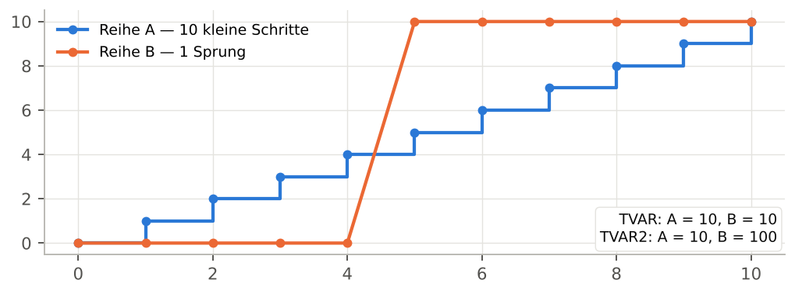
Abbildung 9 — Gleiches TVAR (10), aber TVAR2 = 10 für 10 Schritte von 1 und 100 für einen Sprung von 10.
• TVAR2 reagiert stark auf Rampen und Spitzen.
• Die Einheit ist das Quadrat der Y-Einheit: Der Rohwert ist wenig anschaulich; nutzen Sie ihn vor allem im Vergleich oder über SPIKE_RATIO und RAMP_CONC.
5.2 NTVAR2 — mittlere Energie pro Übergang
| Stufe | Formel | Einheit | Signal → Reihe |
| Advanced | NTVAR2 = TVAR2 / trans | Y-Einheit zum Quadrat | ja: Local variance |
Normierte Version von TVAR2, vergleichbar zwischen Bereichen unterschiedlicher Länge (bei gleicher Schrittweite). Ihre Quadratwurzel √NTVAR2 ist die quadratisch gemittelte Schrittamplitude in der Einheit von Y.
5.3 SPIKE_RATIO — Dominanz von Spitzen
| Stufe | Formel | Einheit | Signal → Reihe |
| Advanced | SPIKE_RATIO = NTVAR2 / NTVAR² | dimensionslos, ≥ 1 | nein |
SPIKE_RATIO vergleicht die mittlere quadratische Energie mit dem Quadrat der mittleren Bewegung. Es beträgt 1, wenn alle Schritte gleich groß sind, und steigt, wenn wenige große Bewegungen dominieren. Als dimensionslose Zahl ist es zwischen Reihen jeder Größenordnung vergleichbar (MW, °C, € …).
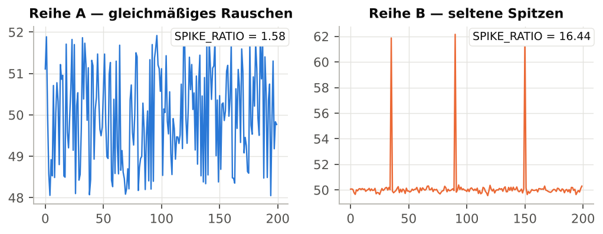
Abbildung 10 — Gleichmäßiges Rauschen: SPIKE_RATIO = 1,58; drei isolierte Spitzen auf ruhigem Grund: 16,44.
| SPIKE_RATIO | Bedeutung |
| ≈ 1 | Bewegungen homogener Größe (gleichmäßige Stufen, reine Alternierung). |
| 1,2 – 2 | Gewöhnliches Rauschen oder sanfte Schwingung: einige Schritte größer als andere. |
| 2 – 5 | Rampen oder deutliche Ereignisse inmitten moderater Bewegungen. |
| > 5 | Wenige seltene Sprünge oder Spitzen tragen den Großteil der Bewegung. |
Anwendung in WysiQ Ein hohes SPIKE_RATIO bei Spotpreisen zeigt Preisspitzen an; bei einem Sensor deutet es oft auf zu prüfende Ausreißer hin. |
5.4 RAMP_CONC — Rampenkonzentration
| Stufe | Formel | Einheit | Signal → Reihe |
| Advanced | RAMP_CONC = √TVAR2 / TVAR | dimensionslos, zwischen 1/√trans und 1 | nein |
RAMP_CONC misst den Anteil der Gesamtbewegung, der von wenigen großen Bewegungen getragen wird. Es beträgt 1, wenn ein einziger Schritt die gesamte Bewegung trägt, und sinkt gegen 1/√trans, wenn alle Schritte gleich sind (völlig diffuse Bewegung).
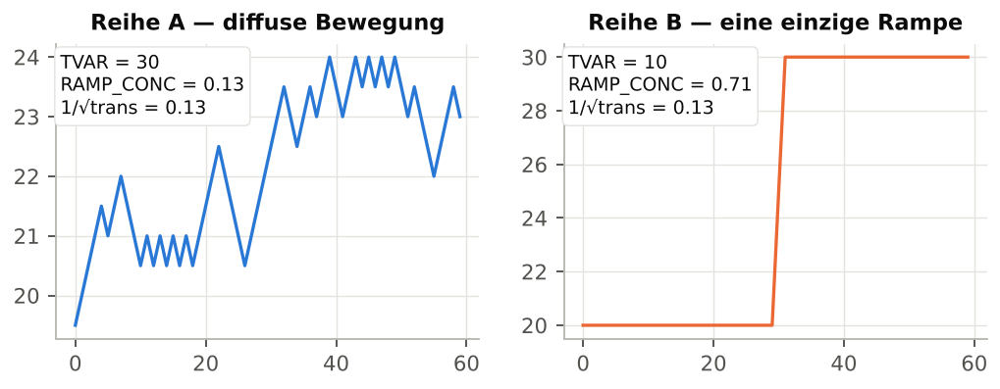
Abbildung 11 — Kleine gleichmäßige Schritte: RAMP_CONC = 0,13 (= 1/√trans); eine einzige Rampe: 0,71.
Mit der Untergrenze vergleichen Die Untergrenze 1/√trans hängt von der Punktanzahl ab (0,08 bei 168 Punkten, 0,33 bei 10 Punkten). Für Bereiche unterschiedlicher Länge betrachten Sie besser SPIKE_RATIO oder vergleichen RAMP_CONC × √trans. SPIKE_RATIO und RAMP_CONC ergänzen sich: Ersteres fragt „dominieren Spitzen?“, Letzteres „wie viele Ereignisse tragen die Bewegung?“. |
5.5 ZERO_X — Nulldurchgänge
| Stufe | Formel | Einheit | Signal → Reihe |
| Advanced | ZERO_X = count(sign(y[i]) ≠ sign(y[i−1])) | Anzahl | nein |
Zählt, wie oft der Wert (nicht die Steigung) das Vorzeichen wechselt. Werte mit |y| < eps gelten als null und werden ignoriert. ZERO_X ist nur für Reihen sinnvoll, die um 0 schwanken: Import-/Exportsaldo, Prognoseabweichung, negative Preise, Ableitung einer anderen Reihe.
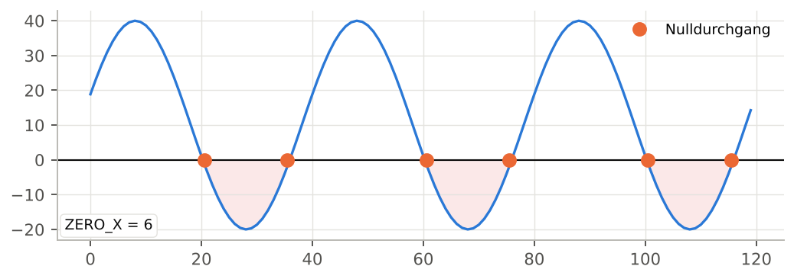
Abbildung 12 — ZERO_X = 6: Die Reihe wechselt sechsmal zwischen positiv und negativ.
Tipp Um Durchgänge um den Mittelwert statt um 0 zu zählen, erstellen Sie eine zentrierte Metric (Reihe − AVG) und analysieren diese. |
5.6 ABS_SLOPE_AVG und ABS_SLOPE_MAX — absolute Steigungen
| Stufe | Formel | Einheit | Signal → Reihe |
| Advanced | ABS_SLOPE_AVG = mean(|dy/dx|) ABS_SLOPE_MAX = max(|dy/dx|) |
Y-Einheit pro X-Einheit | ja: Derivative, Acceleration |
Die lokale Steigung |dy/dx| teilt jede Bewegung durch den zugehörigen X-Abstand. ABS_SLOPE_AVG liefert die mittlere Änderungsgeschwindigkeit, ABS_SLOPE_MAX die steilste Rampe des Bereichs. Anders als NTVAR hängt die Steigung nicht von der Abtastschrittweite ab und bleibt auch bei unregelmäßigem X-Schritt korrekt.
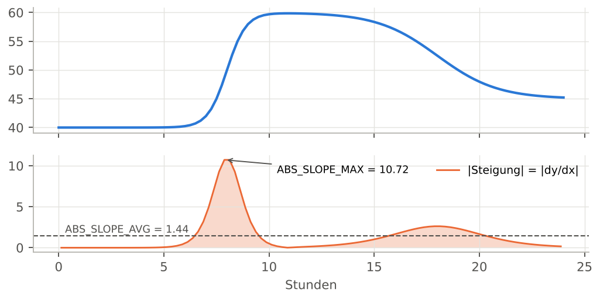
Abbildung 13 — Oben die Reihe, unten ihre absolute Steigung: Mittel 1,44, Maximum 10,72 (Y pro Stunde).
• Ist X ein Datum, wird die Steigung in Y-Einheit pro Tag angegeben: Eine Rampe von 1 000 MW in einer Stunde erscheint als 24 000 MW/Tag.
• Bei regelmäßigem X mit Schrittweite 1 gilt ABS_SLOPE_AVG = NTVAR (vergleichen Sie beide Spalten, um die Regelmäßigkeit des Schritts zu prüfen).
• ABS_SLOPE_MAX reagiert sehr empfindlich auf einen einzelnen Ausreißer: Prüfen Sie mit SPIKE_RATIO.
5.7 AUTOCORR_LAG1 — Trägheit von Punkt zu Punkt
| Stufe | Formel | Einheit | Signal → Reihe |
| Advanced | AUTOCORR_LAG1 = corr(y[:-1], y[1:]) | dimensionslos, −1 bis +1 | ja: Rolling correlation |
Korrelation der Reihe mit sich selbst, um einen Punkt verschoben. Sie beantwortet die Frage: „Lässt sich aus dem aktuellen Wert der nächste vorhersagen?“
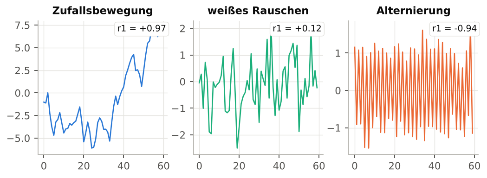
Abbildung 14 — Zufallsbewegung r1 = 0,97, weißes Rauschen r1 = 0,12, Alternierung r1 = -0,94.
| Wert | Bedeutung |
| nahe +1 | Persistentes, träges Signal: Jeder Punkt ähnelt dem vorherigen (Temperaturen, geglätteter Verbrauch, Füllstände). |
| nahe 0 | Weißes Rauschen: Der nächste Punkt ist aus dem aktuellen nicht vorhersagbar. |
| negativ | Alternierung: Auf einen Anstieg folgt ein Rückgang (Schwingung im Abtasttakt, systematische Korrektur). |
Trend und Trägheit Ein starker Trend (eine Rampe) ergibt ebenfalls eine Autokorrelation nahe 1, selbst wenn das Signal um den Trend stark verrauscht ist. Um das Rauschen zu isolieren, analysieren Sie eine trendbereinigte Reihe oder betrachten HF_ENERGY und FFT_POWER_HF. Bei einer konstanten Reihe ist die Autokorrelation nicht definiert (nan). |
5.8 SMOOTHNESS — Glättekennzahl
| Stufe | Formel | Einheit | Signal → Reihe |
| Advanced | SMOOTHNESS = 1 / (1 + NTVAR) | dimensionslos, zwischen 0 und 1 | ja: Local fractality |
Inverse Rauigkeitskennzahl: 1 für eine völlig flache Reihe, nahe 0 für eine sehr unruhige. Praktisch, um Reihen gleicher Einheit schnell von glatt bis rau zu ordnen.
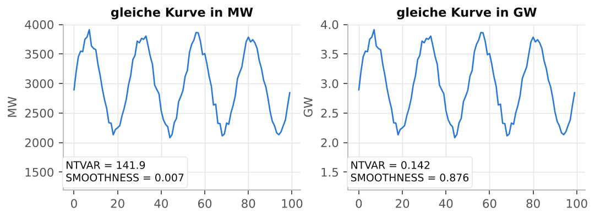
Abbildung 15 — Dieselbe Kurve in MW (SMOOTHNESS = 0,007) und in GW (0,876).
SMOOTHNESS hängt von der Einheit ab Obwohl zwischen 0 und 1 begrenzt, wird SMOOTHNESS aus NTVAR berechnet, das die Einheit von Y trägt. Die Umrechnung von MW in GW verändert die Kennzahl völlig. Vergleichen Sie SMOOTHNESS nur zwischen Reihen gleicher Einheit und Größenordnung; für einheitenübergreifende Rangfolgen nutzen Sie AUTOCORR_LAG1 oder FFT_POWER_HF. |
6. Metriken der Stufe Expert
Die Expert-Metriken richten sich an Anwender, die verstehen möchten, was hinter der Mathematik steckt. Sie beruhen auf zwei Werkzeugen: der Glättung durch gleitenden Mittelwert (HF_ENERGY) und der schnellen Fourier-Transformation (die vier FFT-Metriken).
6.1 HF_ENERGY — Hochfrequenzenergie
| Stufe | Formel | Einheit | Signal → Reihe |
| Expert | smooth = gleitender Mittelwert(y, w) HF_ENERGY = Σ (y − smooth)² |
Y-Einheit zum Quadrat | ja: Local energy |
Die Reihe wird mit einem zentrierten gleitenden Mittelwert über w Punkte geglättet (Parameter HF moving average window, Standard 7); anschließend werden die quadrierten Abweichungen zwischen Reihe und geglätteter Version summiert. Was nach der Glättung übrig bleibt, sind die schnellen Bewegungen: Rauschen, kurze Schwingungen, kurzfristige Steuerung.
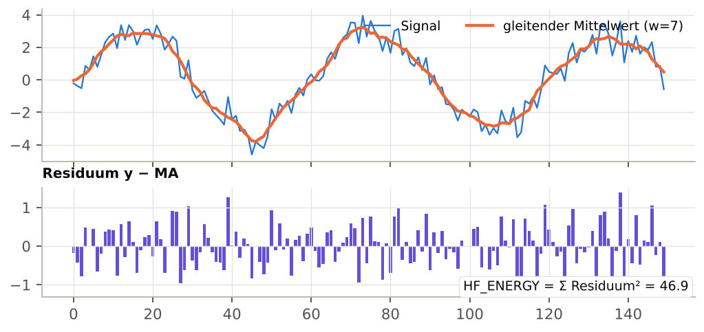
Abbildung 16 — Oben das Signal und sein gleitender Mittelwert; unten die Residuen, deren Quadratsumme 46,9 beträgt. Dasselbe Signal mit weniger Rauschen: 3,6.
Fenster w wählen
• w muss kürzer sein als die Änderungen, die Sie als „Signal“ betrachten: Alles, was schneller als w Punkte schwankt, zählt als Hochfrequenz.
• Stündliche Daten: w = 5 bis 7 isoliert schnelle untertägige Schwankungen; w = 25 würde auch den Tageszyklus der HF zuordnen.
• Verwenden Sie ungerade Werte: Ein gerader Wert wird auf die nächstkleinere ungerade Zahl gesetzt.
Bei gleicher Größenordnung vergleichen HF_ENERGY ist eine Summe: Sie hängt von der Punktanzahl und der Einheit von Y ab. Vergleichen Sie Bereiche gleicher Länge und Reihen gleicher Einheit. Versionshinweis (FIX35): Die Glättung an den Bereichsrändern wird mit Nullen aufgefüllt. Bei einer Reihe, deren Niveau weit von 0 entfernt ist (z. B. 40 000 MW), erzeugen der erste und letzte Punkt riesige Residuen, die die Summe dominieren. Bis zu einer Korrektur analysieren Sie eine zentrierte Reihe (Metric Reihe − AVG) oder nutzen die Umwandlung Local energy (Kapitel 7), die diesen Effekt nicht hat. |
6.2 Die FFT auf einer Seite
Die Fourier-Transformation zerlegt eine Reihe in eine Summe von Sinuswellen unterschiedlicher Frequenzen. Das Ergebnis, das Spektrum, zeigt, welche Energie jede Frequenz trägt. Ein rohes Spektrum zu lesen erfordert Fachwissen: WysiQ extrahiert daher vier direkt nutzbare Zahlen.
• Neuabtastung: Die Reihe wird zunächst linear auf ein regelmäßiges X-Raster mit gleicher Punktanzahl interpoliert. Die Metriken funktionieren daher auch bei unregelmäßigem Schritt (fehlende Daten, Lücken).
• Mindestens 8 gültige Punkte, sonst sind alle vier Metriken nan.
• Gleichanteil ausgeschlossen: Der Mittelwert der Reihe (Frequenz 0) wird nie als dominante Frequenz gewählt.
• Auflösung: Über einen Bereich der Dauer L kann die FFT nur die Perioden L, L/2, L/3, L/4 … erkennen. Über eine Woche (168 h) sind 168, 84, 56, 42, 33,6, 28, 24 h … möglich. Wählen Sie einen Bereich mit einer ganzen Zahl erwarteter Zyklen und mindestens 3 bis 4 Zyklen.
6.3 FFT_FREQ1 und FFT_PERIOD1 — dominanter Zyklus
| Stufe | Formel | Einheit | Signal → Reihe |
| Expert | FFT_FREQ1 = Frequenz des Maximums von |FFT|² (ohne Gleichanteil) FFT_PERIOD1 = 1 / FFT_FREQ1 |
Zyklen pro X-Einheit; X-Einheit |
nein |
FFT_FREQ1 ist die Frequenz mit der meisten Energie; FFT_PERIOD1 die zugehörige Dauer in der Einheit von X. Das ist die direkte Antwort auf die Frage „Hat diese Reihe einen Zyklus, und welchen?“.
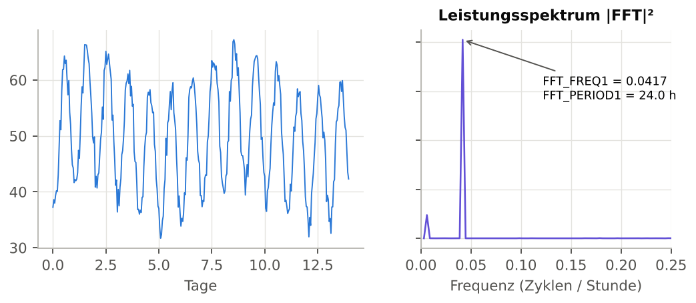
Abbildung 17 — Zwei Wochen stündlicher Daten: Das Spektrum zeigt ein klares Maximum bei 0,0417 Zyklen/Stunde, also FFT_PERIOD1 = 24,0 h.
• Bei einer Datumsachse erscheint ein Tageszyklus als FFT_PERIOD1 ≈ 1,0 (Tag), ein Wochenzyklus als ≈ 7,0.
• Gegenprobe: 2 × OSC_PERIOD ≈ FFT_PERIOD1 bestätigt, dass der Zyklus in der Kurve tatsächlich sichtbar ist.
• Entspricht FFT_PERIOD1 der gesamten Bereichslänge, bedeutet das meist „kein Zyklus, nur ein Trend“.
Die FFT antwortet immer Selbst bei reinem Rauschen liefert FFT_PERIOD1 einen Wert (beim weißen Rauschen aus Abbildung 14: 75). Bevor Sie an einen Zyklus glauben, prüfen Sie, dass FFT_POWER_LF hoch und AUTOCORR_LAG1 deutlich positiv ist. |
6.4 FFT_POWER_HF und FFT_POWER_LF — Energieverteilung
| Stufe | Formel | Einheit | Signal → Reihe |
| Expert | FFT_POWER_HF = Σ|FFT[f > f_Median]|² / Σ|FFT[f > 0]|² FFT_POWER_LF = 1 − FFT_POWER_HF |
dimensionslos, zwischen 0 und 1 | nein |
Das Spektrum (ohne Frequenz null) wird in zwei gleich breite Hälften geteilt. FFT_POWER_HF ist der Energieanteil der oberen, FFT_POWER_LF der der unteren Hälfte; ihre Summe ist immer 1.
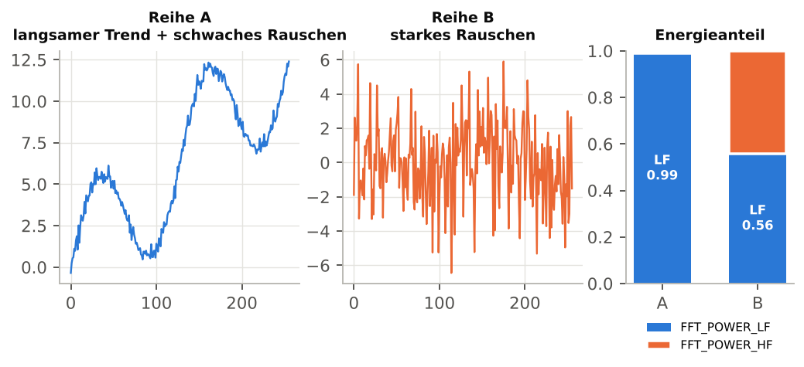
Abbildung 18 — Langsamer Trend: FFT_POWER_HF = 0,01; starkes Rauschen: 0,44.
• Die Grenze liegt bei einem Viertel der Abtastfrequenz, also bei Perioden von etwa 4 Schritten. „HF“ bezeichnet daher Bewegungen auf der Skala weniger Punkte: Bei stündlichen Daten wird ein Tageszyklus vollständig der LF zugeordnet.
• FFT_POWER_HF nahe 0,5: Kennzeichen von weißem Rauschen (gleichmäßig verteilte Energie).
• FFT_POWER_HF nahe 1: schnelle Alternierung von Punkt zu Punkt (siehe „Alternierung“ in Abbildung 14: 0,98).
• FFT_POWER_LF nahe 1: langsamer Trend oder dominante lange Zyklen. Als dimensionslose Zahl ist dieses Verhältnis zwischen allen Reihen vergleichbar.
7. Signal → Reihe: eine Metrik in eine Kurve verwandeln
Die Metriken der Tabelle sind skalar: eine Zahl pro Reihe und Bereich. Das Modul Signals bietet auch ihre vektoriellen Versionen: eine gleitende Berechnung, die für jeden X-Punkt einen Wert liefert. Das Ergebnis ist eine neue Reihe gleicher Länge wie die Quelle, die wie jede andere geplottet wird: Sie kann in Metrics, einer PCA, Areas verwendet oder an die KI gesendet werden.
7.1 Die sieben Umwandlungen
| Umwandlung (Menü) | Berechnung | Fenster | Angeboten bei |
| Rolling mean | zentrierter gleitender Mittelwert | w | allen umwandelbaren Metriken |
| Local variance | zentrierte gleitende Varianz | w | TVAR, TVAR2, NTVAR, NTVAR2 |
| Local energy | gleitende Summe der Residuen² nach kurzer Glättung | w | HF_ENERGY |
| Derivative | dy/dx (Gradient) | keins | allen; ABS_SLOPE_AVG/MAX |
| Acceleration | zweite Ableitung d²y/dx² | keins | ABS_SLOPE_AVG/MAX |
| Rolling correlation | gleitende Korrelation mit einer 2. Reihe | w | AUTOCORR_LAG1 |
| Local fractality | Weglänge / Abstand Anfang–Ende im Fenster | w | SMOOTHNESS |
Das Fenster w ist das des Feldes HF moving average window (Settings > Signal): Es muss kein weiterer Parameter eingegeben werden. Ränder mit unvollständigem Fenster werden über die verfügbaren Punkte berechnet; nicht berechenbare Positionen erhalten NaN, sodass die Reihe punktgenau auf ihre Quelle ausgerichtet bleibt.
7.2 Schnellmethode: Rechtsklick auf eine Zelle
1. Berechnen Sie die Metriken (ReCalc).
2. Rechtsklicken Sie eine Zelle der Tabelle. In der Normalansicht ist die Zielreihe die der angeklickten Spalte, in der transponierten Ansicht die der Zeile. (macOS: Strg + Klick.)
3. Wählen Sie die Umwandlung im Menü „<Reihe> → Series“. Bei Rolling correlation fragt ein Untermenü nach der zweiten Reihe.
4. Die neue Reihe erscheint in der Reihen-Palette und im Graphen.
7.3 Stapelmethode: Schaltfläche > Serie
1. Klicken Sie auf > Serie: Die Schaltfläche wird zu Send, und eine Schaltfläche Clear erscheint.
2. Rechtsklicken Sie einen Punkt ● in Spalte S in der Zeile einer Metrik: Wählen Sie die für diese Metrik angebotene Transformation (sie ist nun „scharf geschaltet“).
3. Klicken Sie die Überschriften der zu transformierenden Reihen (der Klick wählt aus, statt zu sortieren).
4. Klicken Sie auf Send: Die Transformation wird auf jede ausgewählte Reihe angewendet. Bei Rolling correlation wird jede Reihe mit jeder anderen ausgewählten Reihe korreliert.
5. Der Punkt der Metrik wird für die Sitzung zum grünen ✓. Clear verwirft die aktuelle Auswahl.
Sitzungsreihen Die erzeugten Reihen werden wie PCA-Reihen benannt, z. B. Nucleaire_rolling_mean_w7. Es sind Sitzungsreihen: auf den aktuellen X-Bereich ausgerichtet und nicht in der Query gespeichert. Nach einer Änderung des X-Filters starten Sie die Umwandlung erneut. |
7.4 Grafische Beispiele
Rolling mean, Local variance, Local energy
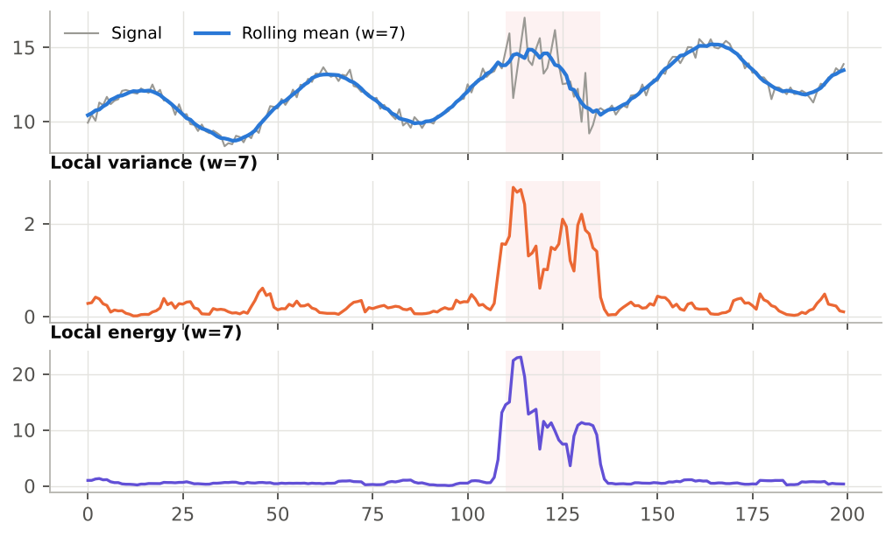
Abbildung 19 — Ein verrauschter Bereich (rosa hinterlegt): Der gleitende Mittelwert glättet ihn, lokale Varianz und lokale Energie lokalisieren ihn.
Local variance und Local energy verwandeln einen visuellen Eindruck („hier ist es unruhiger“) in eine Kurve, die man mit einem Schwellwert versehen kann: etwa eine Metric Local_variance > 1, um unruhige Zeiträume automatisch zu markieren.
Derivative und Acceleration
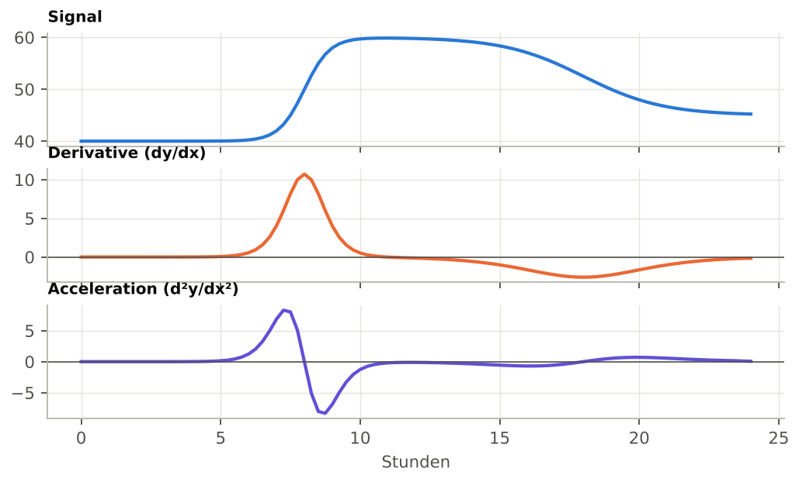
Abbildung 20 — Die Ableitung zeigt die Anstiegsgeschwindigkeit; die Beschleunigung zeigt, wo die Rampe beginnt (positiv) und wo sie abbremst (negativ).
Die Ableitung ist die punktweise Version von ABS_SLOPE_* (mit Vorzeichen). Ihr betragsmäßiges Maximum entspricht ABS_SLOPE_MAX. ZERO_X auf eine Derivative-Reihe anzuwenden bedeutet, die Richtungswechsel zu zählen.
Rolling correlation
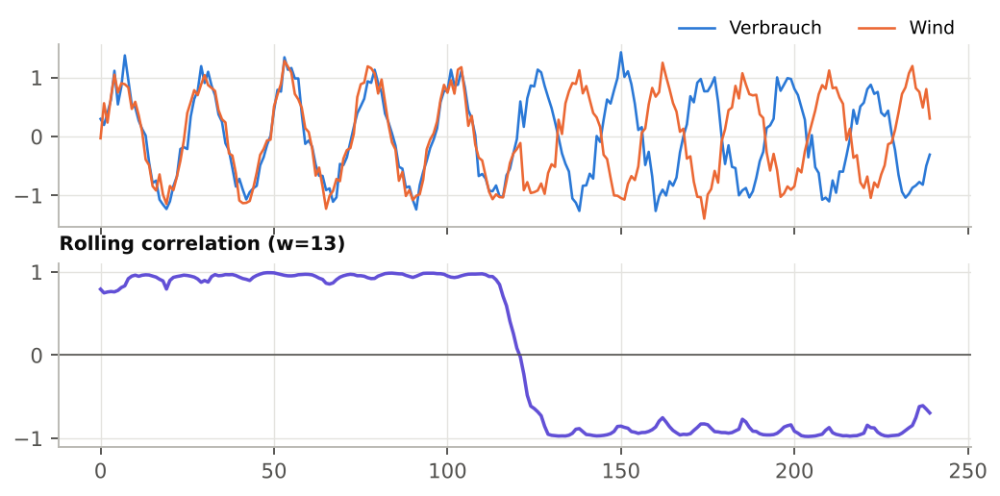
Abbildung 21 — Zwei Reihen zunächst gleichphasig, dann gegenphasig: Die gleitende Korrelation kippt von +1 auf −1.
Ideal, um den Moment zu erkennen, in dem sich die Beziehung zwischen zwei Reihen ändert (z. B. Erzeugung und Verbrauch oder ein Preis und eine Temperatur).
Local fractality
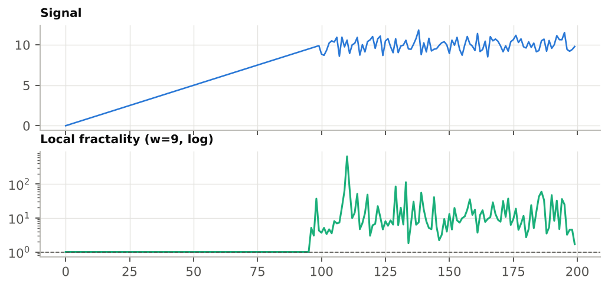
Abbildung 22 — Auf dem geradlinigen Abschnitt beträgt die lokale Fraktalität 1; auf dem verrauschten Abschnitt steigt sie auf 10–100 (logarithmische Skala).
In jedem Fenster teilt die lokale Fraktalität die zurückgelegte Weglänge (Σ|dy|) durch den Abstand zwischen erstem und letztem Punkt. Sie beträgt 1 für ein gerades Segment und steigt mit der Rauigkeit. Haben Anfang und Ende des Fensters denselben Wert, ist das Verhältnis unendlich und wird durch NaN ersetzt, damit die Y-Skala nicht gesprengt wird.
8. Metriken gemeinsam lesen
Eine einzelne Metrik täuscht leicht; drei oder vier gemeinsam gelesene Metriken ergeben ein verlässliches Profil. Die folgende Tabelle zeigt die Signaturen der häufigsten Signalformen.
| Profil | AUTOCORR_LAG1 | SPIKE_RATIO | FFT_POWER_HF | Weitere Hinweise |
| Sauberer Zyklus | ≈ +1 | ≈ 1,2 | ≈ 0 | FFT_PERIOD1 = Periode; 2 × OSC_PERIOD ≈ FFT_PERIOD1 |
| Weißes Rauschen | ≈ 0 | ≈ 1,5 | ≈ 0,5 | SIGN_CHG ≈ 2/3 von trans; FFT_PERIOD1 bedeutungslos |
| Zufallsbewegung, Drift | ≈ +1 | ≈ 1,5 | ≈ 0 | FFT_PERIOD1 ≈ Bereichslänge |
| Isolierte Spitzen | ≈ 0 bis gering | ≫ 2 | variabel | ABS_SLOPE_MAX ≫ ABS_SLOPE_AVG |
| Einzelne Rampe / Sprung | ≈ +1 | ≫ 2 | ≈ 0 | RAMP_CONC hoch; PEAKS gering (mit eps) |
| Schnelle Alternierung | < 0 | ≈ 1 | ≈ 1 | SIGN_CHG ≈ trans |
Diagnose in vier Fragen
1. Stimmt der Bereich? Prüfen Sie nb und das Fehlen großer Lücken.
2. Wie viel Bewegung? NTVAR (oder ABS_SLOPE_AVG bei unregelmäßigem Schritt), verglichen zwischen Zeiträumen oder Reihen gleicher Einheit.
3. Welche Art von Bewegung? SPIKE_RATIO und RAMP_CONC (diffus oder konzentriert), AUTOCORR_LAG1 (träge oder sprunghaft).
4. Gibt es einen Rhythmus? FFT_PERIOD1 und OSC_PERIOD (mit eps), bestätigt durch FFT_POWER_LF.
Reihen unterschiedlicher Einheiten vergleichen Verwenden Sie die dimensionslosen Metriken: SPIKE_RATIO, RAMP_CONC (bei gleicher Länge), AUTOCORR_LAG1, FFT_POWER_HF/LF, die Zählwerte (mit für jede Reihe passendem eps) und die Perioden. Vermeiden Sie TVAR, NTVAR, TVAR2, HF_ENERGY, SMOOTHNESS und die Steigungen. |
9. Praxisfall: Kernkraft mit und ohne Solar
Ziel: mit Zahlen belegen, dass die Kernkraftproduktion bei starker Solarproduktion „gesteuerter“ wird. Die Daten des Beispiels sind synthetisch, bilden aber das in den RTE-Daten beobachtete Verhalten nach.
9.1 Vorbereitung
1. Öffnen Sie eine Query mit den Reihen Verbrauch, Kernkraft und Solar in stündlicher Auflösung.
2. Aktivieren Sie Kernkraft in A (aktivieren Sie auch die anderen, wenn Sie vergleichen möchten).
3. Öffnen Sie die Signals-Palette; blenden Sie mindestens NTVAR, PEAKS, SIGN_CHG, AUTOCORR_LAG1, SPIKE_RATIO, FFT_PERIOD1 und FFT_POWER_LF ein.
9.2 Messung über zwei Zeiträume
1. Rahmen Sie mit der Area-Palette eine Winterwoche ein (wenig Solar). ReCalc, dann Post-it.
2. Verschieben Sie das Rechteck auf eine sonnige Sommerwoche. ReCalc.
3. Vergleichen Sie Post-it und aktuelle Tabelle.
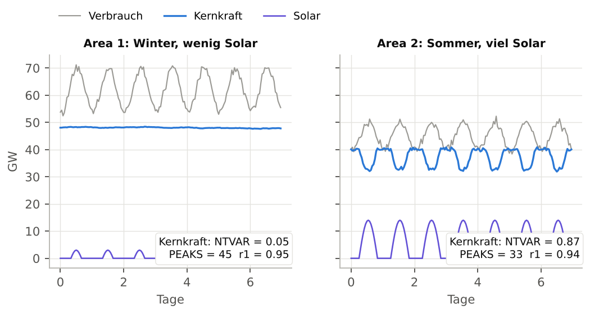
Abbildung 23 — Winterwoche (links) und Sommerwoche (rechts): Die Kernkraft (blau) moduliert spiegelbildlich zum Solar (violett).
| Metrik (Kernkraft) | Winter | Sommer | Bedeutung |
| NTVAR (GW pro Stunde) | 0,048 | 0,865 | ≈ 18-mal mehr Bewegung im Sommer |
| PEAKS (eps = 0) | 45 | 33 | irreführend: Im Winter wird vor allem Rauschen gezählt |
| PEAKS (eps = 0,3) | 0 | 24 | mit eps: Winter flach, Sommer schwingt |
| SPIKE_RATIO | 1,54 | 1,68 | keine isolierten Spitzen: regelmäßige Modulation |
| AUTOCORR_LAG1 | 0,95 | 0,94 | beide bleiben träge |
| FFT_PERIOD1 (Stunden) | 168 | 24 | Winter: langsame Drift; Sommer: 24-h-Zyklus |
| ABS_SLOPE_MAX (GW/h) | 0,17 | 2,98 | deutlich steilere Rampen im Sommer |
9.3 Interpretation
Im Winter ist die Kernkraft nahezu konstant: winziges NTVAR, nach Rauschfilterung keine Schwingung und ein dominanter „Zyklus“ gleich der ganzen Woche (168 h), also eine bloße Drift. Im Sommer moduliert dieselbe Reihe jeden Tag: NTVAR steigt fast um das Zwanzigfache, regelmäßige Spitzen und Täler erscheinen, und die FFT erkennt einen 24-h-Zyklus (1,0 Tag auf einer Datumsachse). Die Rampen erreichen fast 3 GW pro Stunde.
Weiterführend • Wandeln Sie Kernkraft in Local variance um (Rechtsklick) und legen Sie sie über Solar: Die Varianz steigt in den sonnenreichen Stunden. • Nutzen Sie Rolling correlation zwischen Kernkraft und Solar: Sie wird im Sommer deutlich negativ. • Senden Sie beide Tabellen an die KI (→ AI) mit der Frage „Signale interpretieren“. |
10. Übungen
Übung 1 — Kurven und Metriken zuordnen
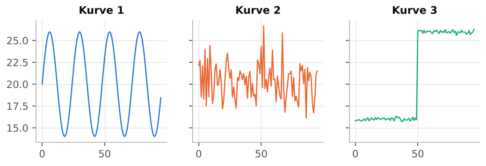
Abbildung 24 — Drei Kurven mit je 96 Punkten.
| Zeile | AUTOCORR_LAG1 | SPIKE_RATIO | RAMP_CONC | FFT_PERIOD1 | FFT_POWER_HF |
| P | 0,98 | 14,17 | 0,39 | 96,0 | 0,02 |
| Q | 0,97 | 1,23 | 0,11 | 24,0 | 0,00 |
| R | -0,03 | 1,66 | 0,13 | 2,2 | 0,50 |
Ordnen Sie jede Zeile P, Q, R der Kurve 1, 2 oder 3 zu und begründen Sie mit mindestens zwei Metriken.
Übung 2 — Handrechnung
Gegeben ist die Reihe y = [2, 5, 3, 3, 8, 6] (X = 0, 1, 2, 3, 4, 5). Berechnen Sie nb, trans, TVAR, TVAR2, NTVAR, SPIKE_RATIO, RAMP_CONC, SIGN_CHG, PEAKS und VALLEYS (eps = 0). Prüfen Sie anschließend in WysiQ, indem Sie diese sechs Werte importieren.
Übung 3 — Perioden interpretieren
Bei einer stündlichen Temperaturreihe mit Datumsachse zeigt die Palette FFT_PERIOD1 = 1,0 und OSC_PERIOD = 0,5. Was folgern Sie? Welche Werte hätten diese beiden Metriken, wenn die X-Achse ein einfacher Stundenindex wäre?
Übung 4 — Einheiten
Sie vergleichen eine Erzeugung in MW mit einem Preis in €/MWh. Welche der folgenden Metriken können Sie direkt zwischen beiden Reihen vergleichen? TVAR, SPIKE_RATIO, SMOOTHNESS, AUTOCORR_LAG1, PEAKS, HF_ENERGY, FFT_POWER_LF.
Übung 5 — eps einstellen
Eine optisch flache Kernkraftreihe zeigt über eine Woche PEAKS = 45. Erklären Sie, warum, und beschreiben Sie das Vorgehen, um eine Zählung zu erhalten, die die echten Schwingungen widerspiegelt.
Übung 6 — Workshop Signal → Reihe
Mit Ihren eigenen Daten: Erzeugen Sie die Local variance einer Reihe und dann eine Metric, die 1 ist, wenn diese Varianz einen Schwellwert überschreitet. Finden Sie damit die drei unruhigsten Zeiträume und berechnen Sie für jeden die Signal-Metriken.
Lösungen
Übung 1
• P = Kurve 3 (einzelner Sprung): SPIKE_RATIO = 14,17 und RAMP_CONC = 0,39, sehr hoch; starke Trägheit (0,98).
• Q = Kurve 1 (sauberer Zyklus): FFT_PERIOD1 = 24,0, FFT_POWER_HF = 0,00, Autokorrelation 0,97.
• R = Kurve 2 (Rauschen): Autokorrelation ≈ 0 (-0,03), FFT_POWER_HF ≈ 0,5 (0,50); FFT_PERIOD1 = 2,2 hat keine physikalische Bedeutung.
Übung 2
dy = [3, −2, 0, 5, −2]; nb = 6; trans = 5; TVAR = 12; TVAR2 = 9 + 4 + 0 + 25 + 4 = 42; NTVAR = 2,4; NTVAR2 = 8,4; SPIKE_RATIO = 8,4 / 2,4² = 1,46; RAMP_CONC = √42 / 12 = 0,54. Vorzeichen ungleich null: + − + − → SIGN_CHG = 3. Das Plateau 3 → 3 wird durchquert: Spitze bei 5, Tal auf dem Plateau 3, Spitze bei 8 → PEAKS = 2, VALLEYS = 1.
Übung 3
Bei einer Datumsachse ist die X-Einheit der Tag: FFT_PERIOD1 = 1,0 bedeutet einen Tageszyklus. OSC_PERIOD = 0,5 Tage ist der mittlere Abstand Spitze → Tal, also eine halbe Periode: Der Zyklus ist sauber (2 × 0,5 = 1,0). Mit einem Stundenindex würde man FFT_PERIOD1 = 24 und OSC_PERIOD = 12 ablesen.
Übung 4
Vergleichbar: SPIKE_RATIO, AUTOCORR_LAG1, FFT_POWER_LF (dimensionslos) und PEAKS (Zählwert, sofern für jede Reihe ein passendes eps gesetzt ist). Nicht vergleichbar: TVAR, HF_ENERGY (Y-Einheit bzw. ihr Quadrat) und SMOOTHNESS (über NTVAR einheitenabhängig).
Übung 5
Mit eps = 0 erzeugt jede Mikroschwankung des Rauschens eine Spitze: Die Zählung misst das Rauschen, nicht die Steuerung. Vorgehen: Rauschamplitude von Punkt zu Punkt auf einem ruhigen Abschnitt schätzen, eps auf das 2- bis 3-Fache setzen, bestätigen und prüfen, dass PEAKS den sichtbaren Schwingungen entspricht. Im Fall aus Kapitel 9 senkt eps = 0,3 GW die Spitzen im Winter von 45 auf 0.
Übung 6
Offene Übung. Kontrollpunkte: Die Local-variance-Reihe trägt das Fenster im Namen (…_rolling_var_w7); sie muss nach einer Änderung des X-Bereichs neu erzeugt werden; die über die unruhigen Zeiträume berechneten Metriken müssen ein deutlich höheres NTVAR und eine deutlich höhere HF_ENERGY zeigen als ruhige Zeiträume.
11. Spickzettel der 22 Metriken
| Metrik | Stufe | Formel | Einheit / Bereich | Kurzdeutung |
| nb | Basic | len(y) | Punkte | gültige Punkte im Bereich |
| trans | Basic | nb − 1 | Schritte | Nenner der Normierungen |
| TVAR | Basic | Σ|dy| | Y | gesamter vertikaler Weg |
| NTVAR | Basic | TVAR / trans | Y pro Schritt | mittlere Unruhe |
| SIGN_CHG | Basic | Vorzeichenwechsel von dy | Anzahl | Richtungswechsel (eps) |
| PEAKS | Basic | + dann − | Anzahl | lokale Maxima (eps) |
| VALLEYS | Basic | − dann + | Anzahl | lokale Minima (eps) |
| OSC_PERIOD | Basic | mittl. Abstand der Extrema | X | halbe Schwingungsperiode |
| TVAR2 | Advanced | Σdy² | Y² | Energie, gewichtet große Sprünge |
| NTVAR2 | Advanced | TVAR2 / trans | Y² pro Schritt | mittlere Energie pro Schritt |
| SPIKE_RATIO | Advanced | NTVAR2 / NTVAR² | ≥ 1 | 1 = homogen; ≫ 1 = Spitzen |
| RAMP_CONC | Advanced | √TVAR2 / TVAR | 1/√trans … 1 | 1 = ein einziges Ereignis |
| ZERO_X | Advanced | Vorzeichenwechsel von y | Anzahl | Nulldurchgänge (eps) |
| ABS_SLOPE_AVG | Advanced | mean|dy/dx| | Y pro X | mittlere Geschwindigkeit |
| ABS_SLOPE_MAX | Advanced | max|dy/dx| | Y pro X | steilste Rampe |
| AUTOCORR_LAG1 | Advanced | corr(y[:-1], y[1:]) | −1 … +1 | +1 träge; 0 Rauschen; − Alternierung |
| SMOOTHNESS | Advanced | 1 / (1 + NTVAR) | 0 … 1 (Y-abhängig) | 1 = glatt |
| HF_ENERGY | Expert | Σ(y − MA_w(y))² | Y² | Rauschen und kurze Schwingungen |
| FFT_FREQ1 | Expert | Maximum von |FFT|² | Zyklen pro X | dominante Frequenz |
| FFT_PERIOD1 | Expert | 1 / FFT_FREQ1 | X | Periode des dominanten Zyklus |
| FFT_POWER_HF | Expert | Energieanteil f > Median | 0 … 1 | 0,5 = weißes Rauschen |
| FFT_POWER_LF | Expert | 1 − FFT_POWER_HF | 0 … 1 | 1 = Trend oder langer Zyklus |
Anhang — Pseudocode der Engine
x, y = endliche Punkte, gefiltert auf [Xmin, Xmax]
dy = diff(y)
TVAR = sum(|dy|) ; TVAR2 = sum(dy**2)
NTVAR = TVAR / len(dy) ; NTVAR2 = TVAR2 / len(dy)
SPIKE_RATIO = NTVAR2 / NTVAR**2
RAMP_CONC = sqrt(TVAR2) / TVAR
AUTOCORR_LAG1 = corrcoef(y[:-1], y[1:])
HF_ENERGY = sum((y - gleitender_mittelwert(y, w))**2)
SMOOTHNESS = 1 / (1 + NTVAR)
OSC_PERIOD = mean(diff(x der Extrema))
# FFT (n >= 8): gleichmäßige Neuabtastung, dann rfft
fs = (n - 1) / (x[-1] - x[0])
power = |rfft(interp(y))|**2
FFT_FREQ1 = freqs[argmax(power[1:]) + 1]
FFT_PERIOD1 = 1 / FFT_FREQ1
FFT_POWER_HF = sum(power[n_f//2:]) / sum(power[1:])
FFT_POWER_LF = 1 - FFT_POWER_HF